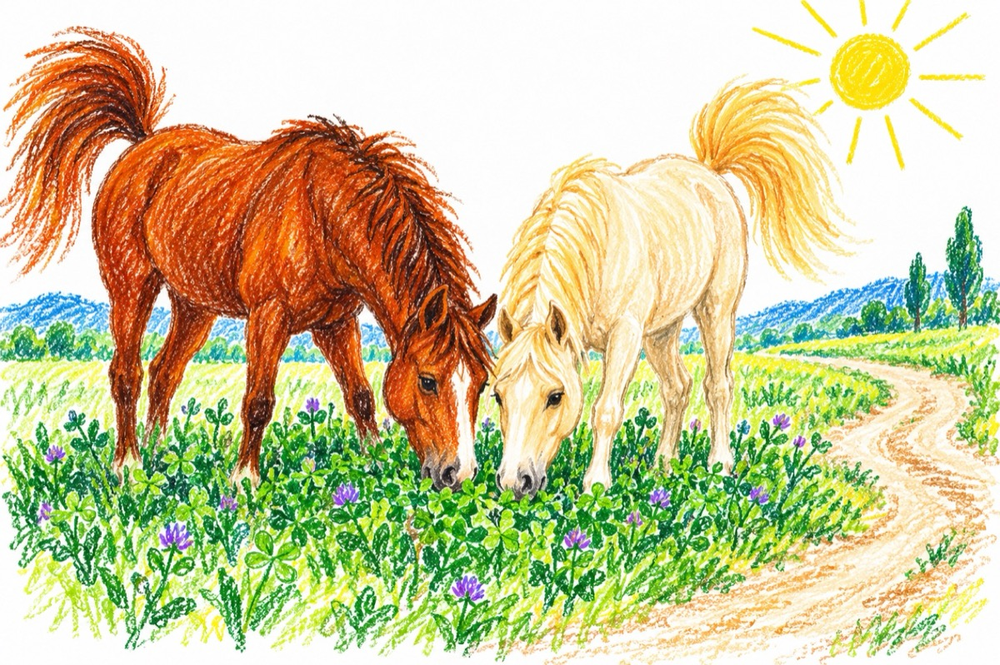

Un cal nebun
Tot mergând calul pe drum,
Îi veni un gând nebun.
S-apucă și necheză,
Și-auziți ce se-ntâmplă!
Sări roata de la car,
Căzu-n șanț și un măgar,
Ce păștea pe drum cuminte,
Fiindcă îl durea un dinte.
Caru-n șanț s-a răsturnat,
Căruțașul era beat.
Și calul s-a speriat,
De tare ce-a nechezat!
Și-a rupt-o la sănătoasa,
Dornic să-și aleag-aleasa,
Ce păștea într-o lucernă,
Fără nici un pic de jenă!
Și-amândoi au făcut prânzul,
Așteptând să vină mânzul?!
Iar măgarul supărat,
La căruță s-a-nhămat.
Și-a dus căruțașu-n sat
Care încă era beat!...
Vasile Groza